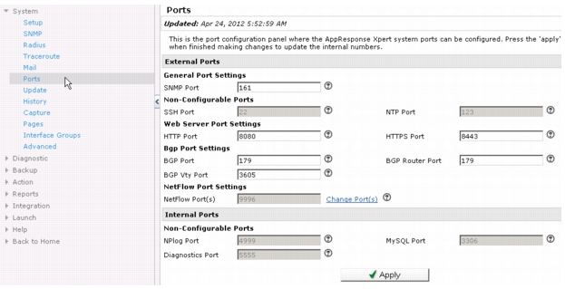

<?xml version="1.0" encoding="utf-8"?>
<!DOCTYPE html PUBLIC "-//W3C//DTD XHTML 1.0 Transitional//EN" "http://www.w3.org/TR/xhtml1/DTD/xhtml1-transitional.dtd">
<html xml:lang="en" lang="en" xmlns="http://www.w3.org/1999/xhtml">
  <head>
    <meta http-equiv="Content-Type" content="text/html;charset=utf-8" />
    <meta http-equiv="Content-Style-Type" content="text/css" />
    <title>Configuring Network Ports</title>
    <link rel="StyleSheet" href="css/AGCH05-Config_Maintenance.css" type="text/css" media="all" />
    <link rel="StyleSheet" href="css/webworks.css" type="text/css" media="all" />
    <script type="text/javascript" language="JavaScript1.2" src="wwhdata/common/context.js"></script>
    <script type="text/javascript" language="JavaScript1.2" src="wwhdata/common/towwhdir.js"></script>
    <script type="text/javascript" language="JavaScript1.2" src="wwhdata/common/wwhpagef.js"></script>
    <script type="text/javascript" language="JavaScript1.2">
      <!--
        var  WebWorksRootPath = "";
      // -->
    </script>
    <script type="text/javascript" language="JavaScript1.2">
      <!--
        // Set reference to top level help frame
        //
        var  WWHFrame = WWHGetWWHFrame("", true);
      // -->
    </script>
    <script type="text/javascript" language="JavaScript1.2" src="scripts/expand.js"></script>
  </head>
  <body style="margin-left: 2%; margin-right: 2%" onload="WWHUpdate();" onunload="WWHUnload();" onkeydown="WWHHandleKeyDown((document.all||document.getElementById||document.layers)?event:null);" onkeypress="WWHHandleKeyPress((document.all||document.getElementById||document.layers)?event:null);" onkeyup="WWHHandleKeyUp((document.all||document.getElementById||document.layers)?event:null);">
    <br />
    <div class="WebWorks_Breadcrumbs" style="text-align: left;">
      <a class="WebWorks_Breadcrumb_Link" href="_ace_live_admin_guide_splash.html">Administrator Guide</a> &gt; <a class="WebWorks_Breadcrumb_Link" href="AGCH05-Config_Maintenance.11.01.html">Administration and Maintenance</a> &gt; Configuring Network Ports</div>
    <hr align="left" />
    <blockquote>
      <div class="h1Top"><a name="951943">Configuring Network Ports</a></div>
      <div class="bodyIntro"><a name="951947">The network ports used by the AppResponse Appliance can be reassigned using the web interface. Click the System tab, then click “ports” to access the port configuration page. This page lists the network ports that are used by internal and external services on the AppResponse Appliance.</a></div>
      <div class="figCaptionPage_outer" style="margin-left: 0pt">
        <table border="0" cellspacing="0" cellpadding="0" summary="" role="presentation">
          <tr style="vertical-align: baseline">
            <td>
              <div class="figCaptionPage_inner" style="width: 63.792pt; white-space: nowrap">
                <span class="bold">Figure&nbsp;18     </span>
              </div>
            </td>
            <td width="100%">
              <div class="figCaptionPage_inner"><a name="951952">System Tab - Ports</a></div>
            </td>
          </tr>
        </table>
      </div>
      <div class="figAnchor"><a name="963924"></a></div>
      <div class="figSpaceAfter"><a name="963925">&nbsp;</a></div>
      <div class="body"><a name="951960">Internal services are ports used by the AppResponse Appliance to communicate with itself. The AppResponse Appliance rejects all external connections to these ports. These ports can not be reassigned and are listed for informational purposes only.</a></div>
      <div class="body"><span class="glossterm"><a name="951967">External services</a></span> are ports used by external devices to communicate with the AppResponse Appliance. It is important to ensure that external devices are able to connect to the AppResponse Appliance on these ports. If your network employs firewalls or access control lists that block access to these ports, either reconfigure the firewall to allow access or reassign the service to a port that allows access under your security infrastructure.</div>
      <script type="text/javascript" language="JavaScript1.2">
        <!--
          // Clear related topics
          //
          WWHClearRelatedTopics();

          // Add related topics
          //
          WWHAddRelatedTopic("Administration and Maintenance", "getting_started", "AGCH05-Config_Maintenance.11.01.html");

          document.writeln(WWHRelatedTopicsInlineHTML());
        // -->
      </script>
    </blockquote>
    <script type="text/javascript" language="JavaScript1.2">
      <!--
        document.write(WWHRelatedTopicsDivTag() + WWHPopupDivTag() + WWHALinksDivTag());
      // -->
    </script>
    <div style="font-size: 8pt; font-family: arial; text-align: left; text-decoration: none;">
      <a href="../wwhelp/wwhimpl/common/html/default.htm">Home</a> | <a href="#" title="To the top of this page">Back to Top</a><br /><br />© 2014 Riverbed Technology.
  All Rights Reserved. This software may be covered by one or more U.S. Patents. See complete patent notice in the <a href="../Notices/ace_live_copy_info_wwp.html">Legal Notices</a> section. <br /><a href="http://www.riverbed.com/support/" style="text-decoration: none" target="_blank"> Riverbed Support</a><br /></div>
  </body>
</html>